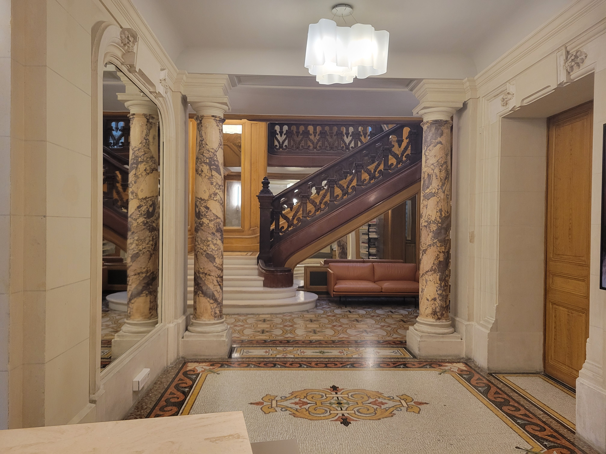

Stage d'une durée de 3 semaines
dans l'entreprise Kusmi Tea
, durantlequel j'ai pu :
Apprendre à créer et gérer des
événements.
Accueillir des clients
Ainsi que réceptionner et envoyer
des colis.

A propos:
Je suis actuellement en classe de 2nd
TNE au lycée jacques brel
(transition numérique et énergétique)
et prévois
une future première
CIEL
. Je suis
ponctuel,
respectueux ainsi qu'appliqué. Je
souhaite plus tard devenir développeur.
base en informatique.